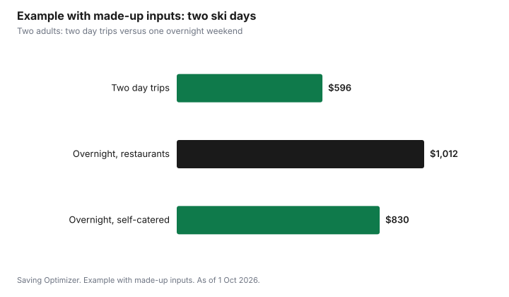

Sports · Canada
Budgeting a Ski Weekend in Canada: Day Trip vs Overnight at Blue, Tremblant or Banff

A ski weekend in Canada costs least as a day trip if you live within about two hours of the hill, and an overnight stay only makes sense when the extra skiing is worth the lodging, which is usually the biggest single cost, as of 1 October 2026. Whether you go to Blue Mountain in Ontario, Mont-Tremblant in Quebec or the Banff area in Alberta, the same lines decide the budget: lodging, lift tickets bought ahead, rentals or lessons, driving, food and fees like national park admission ($12.25 per adult a day in Banff). Add up each line before you book, and the choice between a day trip and a weekend becomes a simple comparison.
Key takeaways
- Lodging is usually the largest line in an overnight trip. A day trip removes it, but adds driving time.
- Buy lift tickets online ahead of time; window prices on busy days are often the highest.
- Quebec requires winter tires on Quebec-registered vehicles from 1 December to 15 March. B.C. requires winter tires or chains on designated highways from 1 October to 30 April, with some routes ending 31 March.
- Banff National Park daily admission is $12.25 per adult or $24.50 per family or group in one vehicle; youth 17 and under are free.
- Groceries for breakfasts and lunches save more than almost anything else on an overnight trip.
- Example with made-up inputs: two adults spend $596 on two day trips or $1,012 on one overnight weekend.
Day trip or overnight: the math
Start by asking how many ski days you want and how far you live from the hill. Two day trips give two ski days with no lodging but two return drives. An overnight weekend gives the same two days with one return drive but one or two nights of lodging, plus restaurant meals if you are not cooking.
| Line | Two day trips | One overnight weekend |
|---|---|---|
| Lodging | None | One or two nights |
| Lift tickets | Two days | Two days |
| Driving | Two return trips | One return trip |
| Food | Packed lunches, dinner at home | Restaurant or self-catered meals |
| Time | More hours in the car | More time on the hill, less fatigue |
For a hill two hours or less away, two day trips usually cost less. For a destination resort four or more hours away, or a flight to the Rockies, an overnight stay is the only practical option, and the question becomes how to keep lodging and food costs down.
Lodging and packages
Lodging prices at ski villages are highest on weekends and holidays. Ways to pay less:
- Stay in a nearby town rather than the ski village and drive or take a shuttle.
- Choose a unit with a kitchen so you can cook breakfasts and dinners.
- Go Sunday night to Monday or midweek, when rates are often lower.
- Split a larger rental with another family; compare the per-person cost with hotel rooms, and include cleaning and booking fees.
- Compare packages that bundle lodging and lift tickets with booking each separately. A package is only a deal if you would buy every part of it.
Read cancellation policies before booking. Weather can turn a ski weekend into a rain weekend, and many rentals do not refund close to the date.
Lift tickets, rentals and lessons
Big resorts use dynamic pricing, so buying online in advance and choosing quieter days is usually cheaper than buying at the window. If you plan several trips, compare a season or multi-resort pass. The cheaper lift tickets guide and the Epic vs Ikon vs local pass guide have the details. For children aged 6 to 12, the Canadian Ski Council's SnowStart Kidz Pass costs $39.99 plus tax for 2026-27 at participating areas, with booking rules.
Rentals can be booked ahead online at many resorts, often for less than walk-up prices. For a family that skis several times a season, a seasonal rental or used gear may cost less than daily rentals; see the kids' skiing guide. Group lessons cost less than private lessons and are usually enough for beginners.
Driving and winter tires
Driving costs include fuel, wear, parking and, for the Rockies or Quebec, the right tires. Rules differ by province:
| Province | Rule |
|---|---|
| Quebec | Winter tires required on Quebec-registered passenger vehicles, including rentals, from 1 December to 15 March. Vehicles registered outside Quebec are exempt, but winter tires are still the safe choice. |
| British Columbia | Winter tires or chains required on designated highways from 1 October to 30 April; some routes end 31 March. Legal winter tires need at least 3.5 mm of tread. |
| Ontario | No requirement, but insurers must offer a discount for winter tires. |
| Alberta | No province-wide requirement; winter tires are strongly advised for mountain driving. |
If you rent a car for the Rockies, ask whether winter tires are included or extra. The winter tires budget guide and the Ontario winter tire insurance discount guide cover the costs.
Park admission for Banff and Lake Louise
Ski areas in Banff National Park, including Lake Louise, Sunshine Village and Mt. Norquay, are inside the park, so you need a park pass. As of 1 October 2026, daily admission is $12.25 per adult (18 to 64), $10.75 per senior and $24.50 for a family or group of up to seven people in one vehicle. Youth 17 and under are free. An annual Parks Canada Discovery Pass is $83.50 per adult or $167.50 per family or group, which pays for itself after seven family days in national parks in a year.
Food
On an overnight trip, food can cost as much as lift tickets if every meal is bought at a restaurant or on the hill. Buy groceries on the way for breakfasts and lunches, pack snacks and refillable water bottles, and eat one meal out as a treat. Many ski lodges allow you to eat a packed lunch in a designated area; check the resort's policy.
Example with made-up inputs: two adults, two ski days
These numbers are an example with made-up inputs. They are not resort prices. Two adults live two hours from a ski resort and compare two day trips with one overnight weekend.
| Line | Two day trips | Overnight weekend |
|---|---|---|
| Lodging (one night) | $0 | $260 |
| Lift tickets bought ahead (two days, two people) | $400 | $400 |
| Fuel and parking | $120 | $60 |
| Food | $76 (packed lunches, dinner at home) | $292 (restaurants) |
| Total | $596 | $1,012 |
If the couple choose a unit with a kitchen and cook most meals, the overnight food line could fall to around $110 in this example, bringing the weekend to $830. The day trips are still cheaper, but the gap narrows, and they gain a relaxed evening and less driving.

Worksheet: your ski weekend
| Line | Day trips | Overnight |
|---|---|---|
| Lodging | ||
| Lift tickets | ||
| Rentals and lessons | ||
| Fuel, parking, tires | ||
| Park admission | ||
| Food | ||
| Total |
Common mistakes
- Booking lodging before checking lift ticket prices for those dates.
- Buying tickets at the window on a holiday weekend.
- Driving into Quebec or B.C. mountain routes without the right tires.
- Forgetting national park admission in Banff.
- Eating every meal out on an overnight trip.
Sources
- Gouvernement du Québec, Requirements for winter tires (quebec.ca), as of 1 Oct 2026. 1 Dec to 15 Mar; Quebec-registered vehicles including rentals.
- Province of British Columbia, Designated winter tire and chain routes, and Passenger vehicle tire and chain requirements (gov.bc.ca), as of 1 Oct 2026. 1 Oct to 30 Apr, some routes to 31 Mar; 3.5 mm tread.
- Parks Canada, Banff National Park fees (parks.canada.ca), as of 1 Oct 2026. Daily admission and Discovery Pass prices; youth free.
- Canadian Ski Council, SnowStart Kidz Pass, as of 1 Oct 2026. $39.99 plus tax for ages 6 to 12.
- Financial Services Regulatory Authority of Ontario, winter tire discount requirement for auto insurers, as of 1 Oct 2026.
- All lodging, ticket, fuel and food amounts in the example table and chart are an example with made-up inputs.
Frequently asked questions
Is a ski day trip cheaper than a ski weekend?
Usually, if you live within about two hours of the hill, because a day trip has no lodging cost. An overnight trip adds lodging and often restaurant meals, but saves one return drive and gives more time on the hill.
Do I need winter tires to ski in Quebec or B.C.?
Quebec requires winter tires on Quebec-registered passenger vehicles, including rentals, from 1 December to 15 March. B.C. requires winter tires or chains on designated highways from 1 October to 30 April, with some routes ending 31 March.
Do I need a park pass to ski at Banff or Lake Louise?
Yes. The ski areas are inside Banff National Park. As of 1 October 2026, daily admission is $12.25 per adult or $24.50 for a family or group in one vehicle, and youth 17 and under are free. A Discovery Pass costs $83.50 per adult or $167.50 per family.
How can I save on a ski weekend?
Buy lift tickets online ahead, stay in a nearby town or a unit with a kitchen, ski midweek if you can, book rentals ahead, and buy groceries for breakfasts and lunches.
Researched and drafted with AI assistance and fact-checked against official Canadian sources. How we create content.
Disclosure: Saving Optimizer may earn a commission if a partner link is added later, such as a travel booking or ski rental offer type. No partnership with any resort, park or rental company is claimed on this page, and no resort is ranked. Education only.